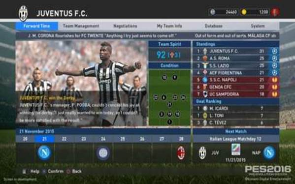
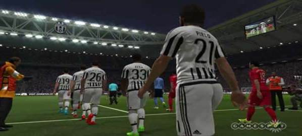
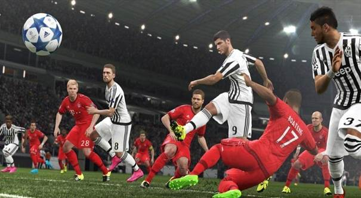

There is a quiet, almost imperceptible genius to PES 2016 that will leave players struggling to explain exactly why they have fallen in love with it.
This finely crafted soccer sim will be lauded by fans who, almost certainly, will base their judgements around the word "feel". As in, doing almost everything in PES 2016 feels fantastic, from fearless and desperate sliding tackles, to holding up the ball under pressure, to the heavenly wave of pride that comes with outthinking and turning a defender.
Such ethereal joys make PES 2016 wonderful in ways that its peers and predecessors are not. How developer PES Productions has delivered on this, however, is tricky to discern. Great design is transparent, goes the saying, and 2016's triumph does not come from a standout feature that can be snappily summarised on the back of the box. It's not your old smartphone but now with a fingerprint scanner. It's not Malibu Stacy with a new hat.
PES 2016 sings in your hands for more elaborate reasons, namely how it wonderfully converges two rather sexless elements: Physics and AI. The advances made in these fundamentals have achieved a more physical, smarter, strategic soccer sim for both football nerds and casual fans alike. It's more fluid, fluctuant, and alive than ever.
Above all else, the most meaningful stride forward is the new collision system, which so much now hinges on. Considering that soccer games live and die by their authenticity, and that dynamic physics systems almost inevitably throw up gif-worthy calamities, you have to commend the audacity of PES Productions for betting the whole farm on its new tech. What's quite remarkable is how faultless it has turned out to be, free from comical miscalculations and distorted momentum swings.
{kind=link}

The Master League redesign adds in a calendar and news headlines, and the overall presentation will seem familiar to Football Manager fans.
Flaccid terms like "collision system" may not ignite the hype, but the tech is a godsend. It brings new life to challenges for possession; no longer are they binary exchanges where either a tackle works or doesn't. Here, fights for the ball are more organic, unpredictable, combative affairs. PES 2016 doesn't rely on canned animations of players giving up and falling over; instead players barge back, protect the ball, and scramble for balance when their shins are clipped. You have more control over your fate, and no longer do you feel anxious to pass the ball away when under pressure. Players can protect themselves, wait for options to unfold, and if fleet-footed enough, can dance out of trouble.
Those challenging for possession will prod and push, but reaching the ball does not equal automatic success. The player collision meshes are water-tight, which, combined with the brainpower of the physics system, means that erratic sliding tackles can result in tangled legs and the ball bobbling away. Meanwhile, the tech also gives smaller players the chance to disrupt towering centre-forwards as they jostle to connect with an oncoming cross. Ultimately it means that timing and canniness has become just as important as ferocity and speed, giving PES 2016 an excellent feel (that word again) of realism and fluidity. PES 2015's aggravating pass delay issue, meanwhile, has been fully resolved.
The outcome of such improvements might be considered a key moment for Konami's dethroned soccer series. PES 2016 proclaims that no longer do you have to play games of tactless scuffles for possession in search of that HollywooPES 2016 sings in your hands for more elaborate reasons, namely how it wonderfully converges two rather sexless elements: Physics and AI. The advances made in these fundamentals have achieved a more physical, smarter, strategic soccer sim for both football nerds and casual fans alike. It's more fluid, fluctuant, and alive than ever.
Above all else, the most meaningful stride forward is the new collision system, which so much now hinges on. Considering that soccer games live and die by their authenticity, and that dynamic physics systems almost inevitably throw up gif-worthy calamities, you have to commend the audacity of PES Productions for betting the whole farm on its new tech. What's quite remarkable is how faultless it has turned out to be, free from comical miscalculations and distorted momentum swings.
The Master League redesign adds in a calendar and news headlines, and the overall presentation will seem familiar to Football Manager fans.
Flaccid terms like "collision system" may not ignite the hype, but the tech is a godsend. It brings new life to challenges for possession; no longer are they binary exchanges where either a tackle works or doesn't. Here, fights for the ball are more organic, unpredictable, combative affairs. PES 2016 doesn't rely on canned animations of players giving up and falling over; instead players barge back, protect the ball, and scramble for balance when their shins are clipped. You have more control over your fate, and no longer do you feel anxious to pass the ball away when under pressure. Players can protect themselves, wait for options to unfold, and if fleet-footed enough, can dance out of trouble.
Those challenging for possession will prod and push, but reaching the ball does not equal automatic success. The player collision meshes are water-tight, which, combined with the brainpower of the physics system, means that erratic sliding tackles can result in tangled legs and the ball bobbling away. Meanwhile, the tech also gives smaller players the chance to disrupt towering centre-forwards as they jostle to connect with an oncoming cross. Ultimately it means that timing and canniness has become just as important as ferocity and speed, giving PES 2016 an excellent feel (that word again) of realism and fluidity. PES 2015's aggravating pass delay issue, meanwhile, has been fully resolved.
The outcome of such improvements might be considered a key moment for Konami's dethroned soccer series. PES 2016 proclaims that no longer do you have to play games of tactless scuffles for possession in search of that Hollywood goal. No longer should you settle for a robotic and clunky back-and-forth for control whilst you pray for that scintillating breakthrough. This is a game that converts the minute-by-minute battles for possession into micro-sized wars of glory and anguish. PES 2016 wants you to have fun between the highlights. This is a game that revels in its own scrappiness, with passes pinging wayward from the outstretched leg of a indomitable defender, with shots deflecting off shins and knees and into the opposite path of where the keeper was diving.
d goal. No longer should you settle for a robotic and clunky back-and-forth for control whilst you pray for that scintillating breakthrough. This is a game that converts the minute-by-minute battles for possession into micro-sized wars of glory and anguish. PES 2016 wants you to have fun between the highlights. This is a game that revels in its own scrappiness, with passes pinging wayward from the outstretched leg of a indomitable defender, with shots deflecting off shins and knees and into the opposite path of where the keeper was diving.
It's not perfect. In the transition to the new physics system, it appears that PES is not quite sure what a foul is. Any tackle is deemed fair game providing the ball is touched, and while that is an understandable baseline rule, in practice even the most perverse and dangerous sliding tackles are unpunished. One suspects the officials would allow E. Honda's Hundred-Hand Slap as long as he flicked the ball in the process. Meanwhile, assaulting a random player, accidentally or not, sometimes isn't even deemed a foul. There is a reasonable argument to be had in Konami's defence, in that the flow of a game shouldn't be disrupted by silly and inconsequential fingerslips, but nevertheless it breaks the illusion.

As ever, PES 2016 misses out on official licenses. Yet its community will rejoice at the editor on PS4 and Xbox One
But this is the only negative trade-off that comes with switching to a dynamic collision system. The positives are bountiful. Another is the marvellous job PES Productions has done crafting the individual physical traits of key players, many of which are now imbued with new layers of realism in how they move and interact. Tevez can bullishly dash into the box whilst hustling defenders in pursuit, Lewandowski can steamroll centrebacks, and Robben can perform his signature jink down the right, cutting inside, and placing the ball in the far post.
How these are animated is exceptional. You'd still know you were watching Robben even if he was wearing a wig. How he runs, twists, and curls his left leg when shooting is all faithfully recreated. Konami claims that PES 2016 amasses three times the volume of animations than its predecessor; a bold statement that invites cynicism, but a believable one nevertheless.
It's a shame, then, that the graphical fidelity does not quite match the standards set by the animations. Much of PES 2016 was built with the Fox Engine, and aside from how intriguing it is to see how Balotelli would look in Metal Gear Solid 5, sometimes the character models resemble animated cadavers when cast in unflattering light. They also can't smile properly, which results in unintentionally hilarious contract signing cut-scenes.
That's probably a little harsh on a game that has clearly improved its visuals from last year. The lighting is less washed out, the pitch and clothing textures are sharper, and the weather effects are fine. These improvements don't extend to the UI and menu system, however, which still carries a couple of nagging foibles, such as untidy text alignment on the formation and tactics pages.

Teams under pressure will park the bus, which in turn can trap them in their own half. Only cool heads will prevail.
Such trivialities wash away at kick-off, when the feel engulfs you. Matches are brought to life thanks to the AI, which sets a new benchmark for the genre. It's almost as if you and the computer have known each other for years; AI teammates move off the ball realistically, and signal where they want the pass, and run into the exact pocket of space that you hoped they would.
In each game you encounter dozens of these smart individual AI decisions, but just as impressive is how players work together as a unit. A deeper understanding of the sport runs throughout each team, which works hard to retain formation whilst adapting to opportunities and dangers. Fullbacks overlap, midfielders drop back, defenders close gaps, keepers dash out of the box, but in all cases, only when it makes sense. It inspires more calculated build-up play, where it's the better team that emerges victorious, as opposed to the one that had the most superstar moments.
Like with all recent editions of PES, a wealth of gameplay options await, with updates to modes such as Become A Legend, Master League, and MyClub (the latter was inaccessible during review due to the servers being down). Master League has been given a brilliant Football Manager-aping redesign, with a calendar view and news items all displayed on its home screen.
Yet there's little worth in assessing soccer sims by the weight of their game modes, or indeed, the breadth of their official licences. All that truly matters is what unfolds in those virtual ninety minutes, either against a friend, an online stranger, or the computer. On that test alone, PES 2016 represents the best game in the series since the PlayStation 2 era.